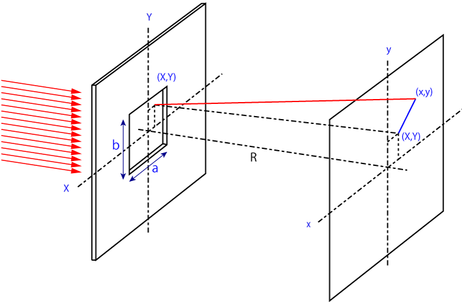

矩形開口からの回折-22
矩形開口
開口部が四角い場合を考えましょう．

この場合は簡単です，二重積分を別々に計算すればいいのです．
\(\Large \begin{eqnarray} E
&=& \frac{E_0 e^{i ( \omega t - k R )}}{z} \int_{Aperture} e^{ ik \frac{(Xx+Yy)}{R}} ds \\
&=&
\frac{E_0 e^{i ( \omega t - k R )}}{z} \int_{-a/2}^{a/2} e^{ik \frac{Xx}{R}} dX \int_{-b/2}^{a/2} e^{ik \frac{Yy}{R}} dY \\
\end{eqnarray} \)
となり，この二重積分の部分を計算すればよいのです．
今回は強度の絶対値は考慮せず形状のみ考えますし，二つの積分は同じなので，
\(\Large e^{ik \frac{Xx}{R}} dX \)
のみの計算でいいことがわかります．
\(\Large \begin{eqnarray} \int_{-a/2}^{a/2} e^{ik \frac{Xx}{R}} dX
&=& \frac{R}{iKx} \left[ exp \left[ ik \frac{Xx}{R} \right] \right]_{-a/2}^{a/2} \\
&=&
\frac{R}{iKx} \left[ exp \left[ ik \frac{xa}{2R} \right] - exp \left[- ik \frac{xa}{2R} \right]\right] \\
\end{eqnarray} \)
\(\Large \alpha \equiv \frac{kax}{2R} \)
とすれば，
\(\Large = a \frac{[exp[i \alpha]-exp[-i \alpha]]}{2 i \alpha} \)
となります．オイラーの公式より，
\(\Large = a \frac{sin \alpha}{\alpha} \)
となります．同様に，
\(\Large \beta \equiv \frac{kby}{2R} \)
とすれば，
\(\Large = b \frac{[exp[i \beta]-exp[-i \beta]]}{2 i \beta} \)
となり，
\(\Large = b \frac{sin \beta}{\beta} \)
となります．強度は二乗平均となるので，
\(\Large I \propto \left( \frac{sin \alpha}{\alpha} \right)^2 \left( \frac{sin \beta}{\beta} \right)^2 \)
となります．
この結果は，一個のスリットの回折-01の結果と（当然ながら）一致します．